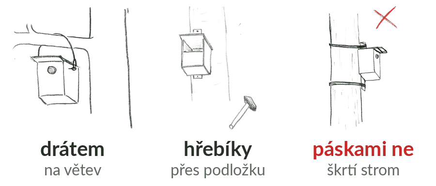

Plánovaná budka je na mapě kruh: pověs ji kamkoli do něj, na vhodný strom. Pak v kontrole nech zapnuté Budka pověšena, stoupni si pod budku a zadej polohu, změř otvor a vyber typ a otevírání. Když se pověsit nepodařilo, přepínač vypni a napiš proč.
Od jiné budky stejného typu aspoň 50 m, od jakékoli aspoň 15 m. Když je budek moc, část z nich každý rok zůstane prázdná, protože okolí neuživí víc ptáků. Aplikace upozorní, když je nová budka moc blízko jiné. Výjimkou jsou špačci a vrabci, kteří rádi hnízdí blízko sebe.


Žebřík opřený o strom drží jeden až dva lidé, třetí leze s budkou. Přitlouct budku ve výšce tří až pěti metrů není tak snadné, jak vypadá. Ať spadne raději budka než člověk, ale ať nic nespadne na ty, kdo drží žebřík.
Polohu, označení a typ budky. Označení namaluj na budku světlou barvou, na spodek nebo bok, ať ji příště poznáš. Do aplikace napiš přesně to, co je na budce.
Věšet se dá kdykoli, nejlépe ale na podzim a v zimě: budka do jara oprší a sýkory si dutiny vyhlížejí už od podzimu. Novou budku mimo plán pověs jen tam, kde má správce oblasti věšení domluvené s majitelem pozemku.